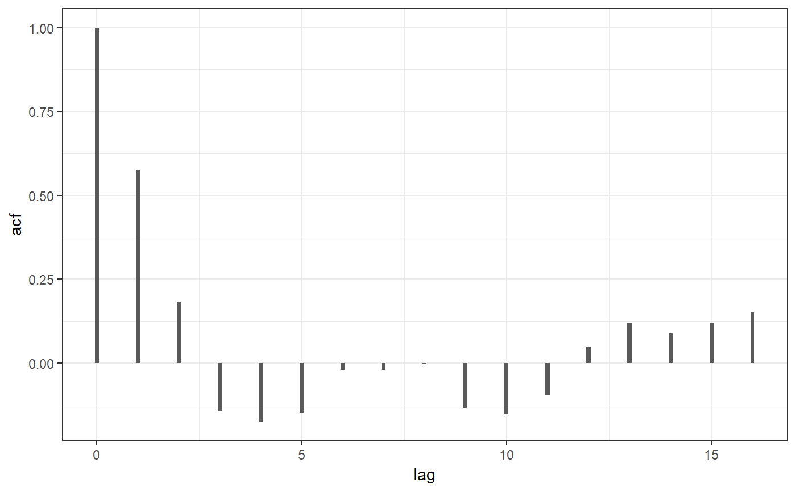
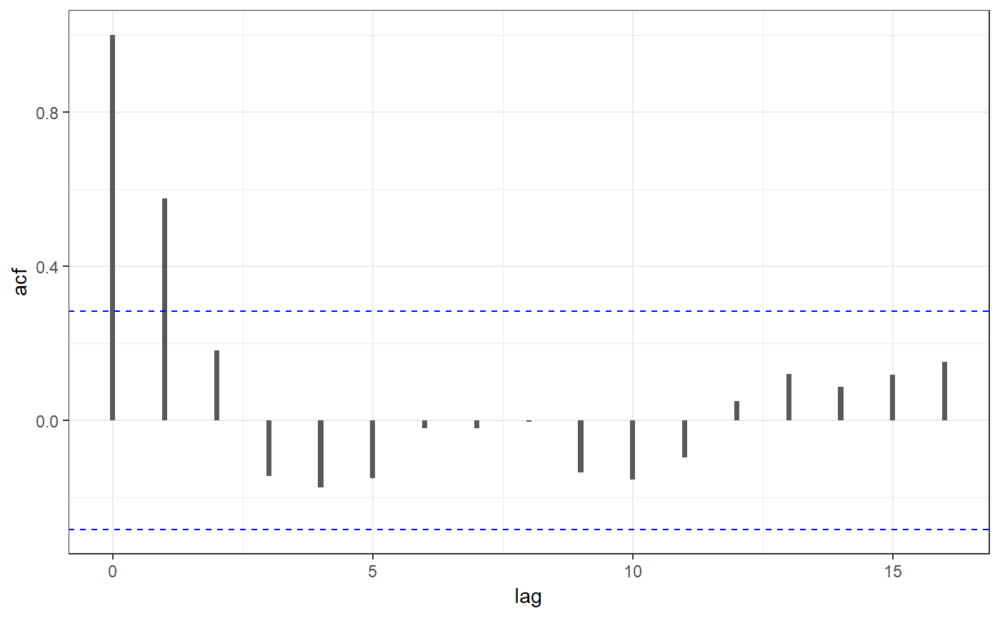

Tidy an "acf" object, which is the output of acf and the
related pcf and ccf functions.
# S3 method for acf tidy(x, ...)
| x | acf object |
|---|---|
| ... | (not used) |
data.frame with columns
lag values
calculated correlation
#> # A tibble: 17 x 2 #> lag acf #> <dbl> <dbl> #> 1 0 1.000 #> 2 1 0.576 #> 3 2 0.182 #> 4 3 -0.145 #> 5 4 -0.175 #> 6 5 -0.150 #> 7 6 -0.0210 #> 8 7 -0.0203 #> 9 8 -0.00420 #> 10 9 -0.136 #> 11 10 -0.154 #> 12 11 -0.0972 #> 13 12 0.0490 #> 14 13 0.120 #> 15 14 0.0867 #> 16 15 0.119 #> 17 16 0.151#> # A tibble: 31 x 2 #> lag acf #> <dbl> <dbl> #> 1 -1.25 0.0151 #> 2 -1.17 0.366 #> 3 -1.08 0.615 #> 4 -1 0.708 #> 5 -0.917 0.622 #> 6 -0.833 0.340 #> 7 -0.75 -0.0245 #> 8 -0.667 -0.382 #> 9 -0.583 -0.612 #> 10 -0.5 -0.678 #> # ... with 21 more rows#> # A tibble: 16 x 2 #> lag acf #> <dbl> <dbl> #> 1 1 0.576 #> 2 2 -0.223 #> 3 3 -0.227 #> 4 4 0.103 #> 5 5 -0.0759 #> 6 6 0.0676 #> 7 7 -0.104 #> 8 8 0.0120 #> 9 9 -0.188 #> 10 10 0.00255 #> 11 11 0.0656 #> 12 12 0.0320 #> 13 13 0.0219 #> 14 14 -0.0931 #> 15 15 0.230 #> 16 16 0.0444# lag plot library(ggplot2) result <- tidy(acf(lh, plot=FALSE)) p <- ggplot(result, aes(x=lag, y=acf)) + geom_bar(stat='identity', width=0.1) + theme_bw() p# with confidence intervals conf.level <- 0.95 # from `plot.acf` method len.data <- length(lh) # same as acf$n.used conf.int <- qnorm((1 + conf.level) / 2) / sqrt(len.data) p + geom_hline(yintercept = c(-conf.int, conf.int), color='blue', linetype='dashed')